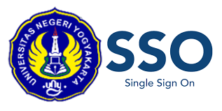

Silakan unduh kalender akademik untuk melihat jadwal kegiatan akademik selama satu tahun ajaran.
📢 KETENTUAN PEMBAYARAN BIAYA PENDIDIKAN UKT/SPP SEMESTER GENAP 2025/2026 BAGI MAHASISWA ANGKATAN 2019—2025
KETENTUAN PEMBAYARAN BIAYA PENDIDIKAN UKT/SPP SEMESTER GENAP 2025/2026 BAGI MAHASISWA ANGKATAN 2019—2025 Dapat diunduh pada tautan berikut:
Gunakan akun email UNY Anda untuk mengakses seluruh layanan akademik.
Login melalui SSO Lupa Password EmailFasilitas ini disediakan bagi orang tua/wali mahasiswa untuk memantau perkembangan akademik.